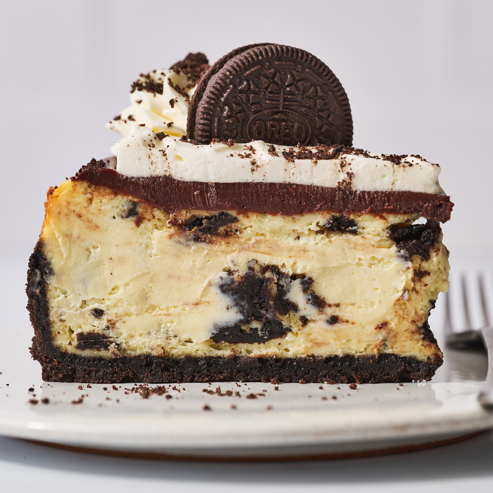

Oreo Cheesecake

Description
Oreo Cheesecake is the ultimate dessert for Oreo lovers of all ages! A rich,
buttery Oreo base sits beneath a luscious, ultra-creamy, Oreo-studded
cheesecake filling, all topped with a simple homemade whipped cream.
Ingredients
For the crust:
-
32 (367 grams) Oreo cookies* (regular-stuffed, keep filling intact), divided
- 4 tablespoons (57 grams) butter, melted
For the filling:
-
32 ounces (907 grams) cream cheese, completely softened to room temperature
- 5 large eggs, at room temperature
- 1 cup (200 grams) granulated sugar
- 1/2 cup (119 grams) sour cream, at room temperature
- 1 ½ tablespoons vanilla extract
- 20 (230 grams) Oreo cookies, quartered
For the ganache:
- 1 cup (170 grams) semisweet chocolate chips
- 1/2 cup (119 grams) heavy cream
For the whipped cream, optional:
- 1 cup (237 grams) heavy cream, cold
- 2 tablespoons powdered sugar
- 1 teaspoon vanilla extract
Steps
Make the crust:
-
Preheat the oven to 325°F. In the bowl of a food processor, process the
cookies until they are finely ground crumbs. Remove 22 grams (about ¼ cup)
of crumbled Oreo and place in a small sealed container. This will be used
later for topping your cheesecake.
-
To the food processor, add the butter and pulse until moistened. Press into
the bottom and half up the sides of a 9-inch nonstick springform pan. Place
the pan on a rimmed baking sheet and bake for 10 minutes. Maintain oven
temperature.
Make the filleing:
-
While the crust bakes, in the bowl of an electric mixer, beat the cream
cheese until smooth. Add the eggs one at a time, blending after each
addition until just combined. Scrape down the sides and bottom of the bowl.
Add the sugar, sour cream, and vanilla and beat on low until combined. Be
careful not to overmix. Using a spatula, fold in the Oreo cookies.
-
Pour the batter into the baked crust. This will fill your pan to about 80%,
but don’t worry about it overflowing in the oven. With the pan still on the
baking sheet, bake for about 1 hour, or until set and the edges and top look
slightly dry. If the middle is slightly wobbly, that’s fine. Err on the side
of underbaking rather than overbaking.
-
Turn off the oven heat and open the oven door by 1 inch. I use a wooden
spoon to keep it open. Let the cheesecake cool inside the oven for 30
minutes. This helps to prevent large cracks from forming.
-
Run a thin-bladed flexible knife around the edge of the cheesecake to make
sure it's not sticking to the sides (which can cause cracks as it cools).
Don’t worry if your cheesecake looks lumpy, no one will know once you top
with ganache and whipped cream. Let the cheesecake cool completely to room
temperature on a wire rack, about 2-3 hours. Refrigerate overnight until
completely chilled, or for at least 5 hours. Release the cheesecake from the
pan onto a cake stand or serving plate.
Make the ganache:
-
Place the chocolate chips in a medium heatproof bowl. In a small saucepan,
heat the cream just until simmering. Pour over the chocolate chips. Let sit
for 3 minutes before stirring until the mixture is melted and smooth. Let
cool slightly until thickened. Pour over the cheesecake and smooth evenly.
Place cheesecake in the fridge to slightly set the ganache while you make
the whipped cream.
Optional: Make the whipped cream:
-
Use an electric mixer to beat the cream, powdered sugar, and vanilla on high
speed until stiff peaks form.
-
Using a spatula, place half of the whipped cream on top of the cooled and
slightly set ganache. Smooth to meet ganache at the edges of the cheesecake.
Place the remaining half of the whipped cream in a piping bag fitted with
Wilton 1M tip. Pipe swirls around the outer edge of the top of the
cheesecake. Lightly sprinkle the saved Oreo crumbs on top of each piped
swirl, then pour the remaining crumbs in the center of the cheesecake,
gently spreading evenly.
- Serve or cover and store in the fridge for up to 2 days.